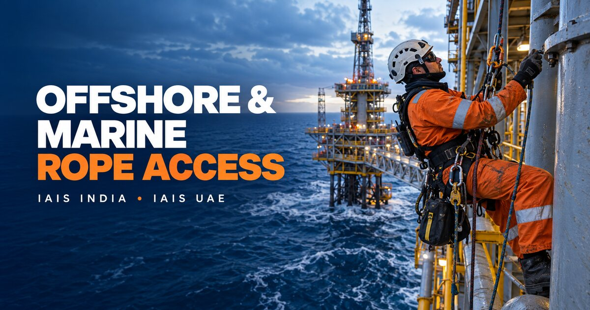

Rope Access NDT
Close-contact inspection without conventional scaffolding.
- UT thickness measurement
- PAUT, TOFD and conventional UT
- MT, PT and visual testing
- Hardness and PMI
Integrated rope access inspection, NDT and industrial maintenance delivered worldwide through our India and UAE operations by experienced, IRATA-certified personnel—planned around safety, asset availability and reliable technical reporting.



Integrity & Advanced Inspection Solutions India Pvt. Ltd. and Integrity & Advanced Inspection Solutions UAE LLC provide a coordinated platform for supporting critical projects from India and the UAE.
Our teams combine rope access competence with conventional and advanced NDT, corrosion monitoring, structural surveys and industrial maintenance. With operational support from Chennai and Abu Dhabi, we can plan mobilisations for projects across India, the Middle East and other international locations.
Speak with our technical teamSite-specific access, anchorage, exclusion-zone and rescue planning before mobilisation.
Rope access personnel paired with the NDT, inspection or maintenance competence required by the scope.
Project and mobilisation support through India and UAE operations for global requirements.
Each project is configured around the asset, access condition, applicable code and client procedure. The exact personnel certification and equipment package are confirmed in the technical proposal.
Close-contact inspection without conventional scaffolding.
Condition assessment of difficult-to-access structures.
Integrity inspection across production and storage assets.
Rope access support for offshore and marine environments.
Planned corrective and preventive work at height.
Corrosion-control work in restricted locations.
Access-enabled industrial cleaning services.
Installation and inspection support at height.
Inspection and maintenance for wind assets.
Specialist work on tall or geometrically complex buildings.
Planned access for internal inspection locations.
Dedicated capability for planned high-risk activities.
Rope access is effective only when the complete work system is planned and supervised. IAIS develops the access method around the task—not as an afterthought.
Personnel certification, trade competence, NDT qualification and site-specific requirements are verified against the agreed scope before deployment.
Asset drawings, work locations, hazards, operational constraints and inspection requirements are reviewed.
Access system, anchors, exclusion zones, tools, dropped-object controls and communications are defined.
Personnel documents and inspected rope access, rescue and task equipment are matched to the project.
The team works under documented controls with an appropriate rescue plan maintained throughout the activity.
Findings, photographs, measurements, limitations and recommendations are issued in an agreed format.
Share the work location, asset type, inspection or maintenance scope, expected schedule and applicable certification requirements.
Our Chennai and Abu Dhabi coordination teams support mobilisation for projects in India, the Middle East and international locations.